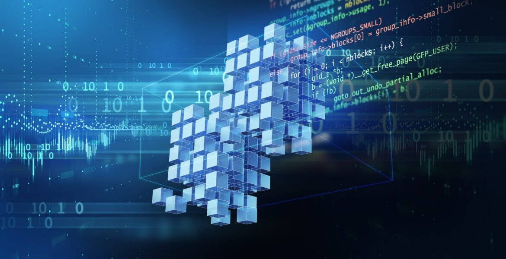

from wiki
For other uses, see Block chain (disambiguation).
A blockchain is a type of Digital Ledger Technology (DLT) that consist comprisis of growing list of records, called blocks, that are securely linked together using cryptography. [1][2][3][4] Each block contains a cryptographic hash of the previous block, a timestamp, and transaction data (generally represented as a Merkle tree, where data nodes are represented by leafs).
The timestamp proves that the transaction data existed when the block was created. Since each block contains information about the block previous to it, they effectively form a chain (compare linked list data structure), with each additional block linking to the ones before it. Consequently, blockchain transactions are irreversible in that, once they are recorded, the data in any given block cannot be altered retroactively without altering all subsequent blocks.
A blockchain is a decentralized, distributed, and often public, digital ledger consisting of records called blocks that are used to record transactions across many computers so that any involved block cannot be altered retroactively, without the alteration of all subsequent blocks. [3][21] This allows the participants to verify and audit transactions independently and relatively inexpensively. [22] A blockchain database is managed autonomously using a peer-to-peer network and a distributed timestamping server. They are authenticated by mass collaboration powered by collective self-interests.[23] Such a design facilitates robust workflow where participants' uncertainty regarding data security is marginal. The use of a blockchain removes the characteristic of infinite reproducibility from a digital asset. It confirms that each unit of value was transferred only once, solving the long-standing problem of double-spending. A blockchain has been described as a value-exchange protocol. [24] A blockchain can maintain title rights because, when properly set up to detail the exchange agreement, it provides a record that compels offer and acceptance. [citation needed]